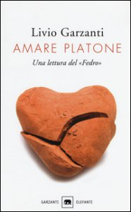

29:12 · 10 OPERE
Amare Platone di Livio Garzanti
Il filo del discorso
Il video presenta Amare Platone di Livio Garzanti come invito a tornare ai dialoghi attraverso una lettura personale e partecipe. Dopo un richiamo al precedente incontro su Propaganda di Bernays, Caldarella precisa che intende discutere il libro di Garzanti e non offrire una trattazione complessiva del pensiero platonico. Il Fedro, indicato nel sottotitolo del volume, introduce amore, bellezza e conoscenza: la scena fuori dalle mura permette al relatore di interrogare il rapporto fra natura, dialogo ed etica. La lettura della prefazione porta poi al valore consolatorio del testo e alla presenza di Platone nella tradizione. Il discorso si allarga alla crisi della polis, alla Settima lettera, alla Repubblica e alla distinzione fra un pensiero vivo e una dottrina ridotta a manuale. L’amore viene proposto come comprensione, mentre il rapporto fra idea e opinione apre un confronto sulla figura del tiranno e sulla condizione del filosofo. Alcuni passi del Sofista mostrano il filosofo sotto sembianze diverse, difficili da riconoscere. Il Cratilo conduce quindi a una discussione di verità, etimologia e interpretazione di Heidegger. Caldarella insiste sui limiti dell’individuo e sul rischio di credere che una formula dia possesso della verità. Nella conclusione, la libertà del pensiero e il significato dell’amore sono opposti alla rigidità del gergo. Il filo conduttore rimane la lettura del libro di Garzanti: il relatore ne valorizza l’accessibilità e insieme ne discute alcuni passaggi.
I libri nel discorso

Propaganda
Copertina: Apogeo · Saggi, marzo 2026 · traduzione e redazione Aldo Ballerini
Copertina autentica dell’edizione Apogeo del marzo 2026, successiva alla registrazione del video: è un riferimento bibliografico attuale, non l’esemplare citato nel filmato. Titolo originale dell’opera Propaganda, 1928.
Bernays e Propaganda sono nominati nel richiamo al video precedente.
Passaggio 0:13 ↗ · Fonti e libro ↗
Amare Platone. Una lettura del «Fedro»
Copertina: Garzanti · Gli elefanti. Saggi, 2016 · 124 pagine
Immagine autentica dell’opera, controllata visivamente; l’edizione di riferimento non è attribuita al filmato.
Livio Garzanti, titolo e sottotitolo sono annunciati e diversi passi sono letti.
Passaggio 0:27 ↗ · Fonti e libro ↗
Fedro
Copertina: BUR · 2006 · a cura di Roberto Velardi
Immagine autentica dell’opera, controllata visivamente; l’edizione di riferimento non è attribuita al filmato.
Il Fedro è esplicito e la scena fuori dalle mura è commentata.
Passaggio 2:24 ↗ · Fonti e libro ↗
Bibbia
Copertina: San Paolo, 2014 · Nuova Versione dai Testi Antichi · edizione di riferimento
La Bibbia e Isaia sono richiamati attraverso l’immagine del lupo e dell’agnello.
Passaggio 6:37 ↗ · Fonti e libro ↗
Settima lettera
Copertina: Carocci · Classici · 2020, ristampa 2024 · a cura di Filippo Forcignanò
Immagine autentica dell’opera, controllata visivamente; l’edizione di riferimento non è attribuita al filmato.
La Settima lettera è esplicita e la sua autenticità viene problematizzata.
Passaggio 11:58 ↗ · Fonti e libro ↗
La Repubblica
Copertina: Laterza · La Repubblica · edizione con testo a fronte di riferimento
Immagine associata all’ISBN di riferimento e controllata visivamente; edizione e traduzione non identificate come quelle citate o lette nel video.
Politeia e traduzione Repubblica sono esplicite.
Passaggio 12:12 ↗ · Fonti e libro ↗
Menone
Copertina: Bompiani · Testi a fronte · 2000
Copertina autentica dell’edizione di riferimento, controllata visivamente. Non identifica l’esemplare letto o citato nel video.
Il Menone è nominato come esempio di partecipazione del lettore.
Passaggio 13:41 ↗ · Fonti e libro ↗
Teeteto, o sulla scienza
Identificazione probabile
Copertina: Feltrinelli · 1994 · traduzione di Luca Antonelli, introduzione di Salvatore Natoli, saggio di Davide Spanio
Immagine autentica dell’opera, controllata visivamente; l’edizione di riferimento non è attribuita al filmato.
Il paragone fra sovrano e pastore rimanda alla digressione del Teeteto; titolo non annunciato.
Passaggio 15:48 ↗ · Fonti e libro ↗
Sofista
Copertina: Einaudi · Piccola Biblioteca Einaudi Nuova serie 402, 2008 · cura e traduzione Bruno Centrone
Immagine autentica dell’opera, controllata visivamente; l’edizione di riferimento non è attribuita al filmato.
Il Sofista è nominato e ne viene letto un passo sui filosofi.
Passaggio 17:31 ↗ · Fonti e libro ↗
Cratilo
Copertina: Carocci · 2022
Copertina autentica controllata visivamente. Edizione di riferimento; non identifica l’esemplare usato o citato nel video.
Il Cratilo è annunciato nella discussione della parola aletheia.
Passaggio 19:46 ↗ · Fonti e libro ↗Minutaggi ricavati da testi automatici, da riascoltare. Le identificazioni probabili sono segnalate accanto ai libri.